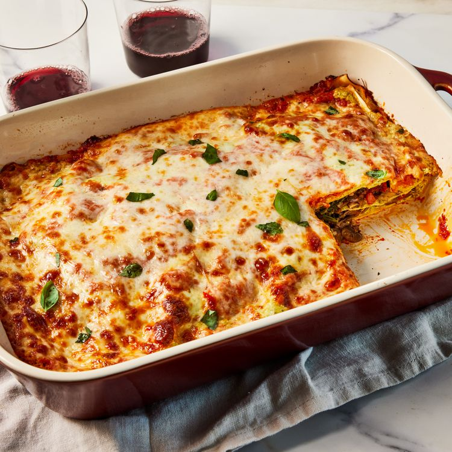

Lasagna, also known as lasagne in plural form, is a type of pasta made in very wide , flat sheets. It consists of stacked layers of pasta alternating with fillings such as ragu(ground meats and tomato sauce),vegetables etc. This may also be topped with grated cheese which beautifully gets melted when baked and looks like a golden sheet on top.